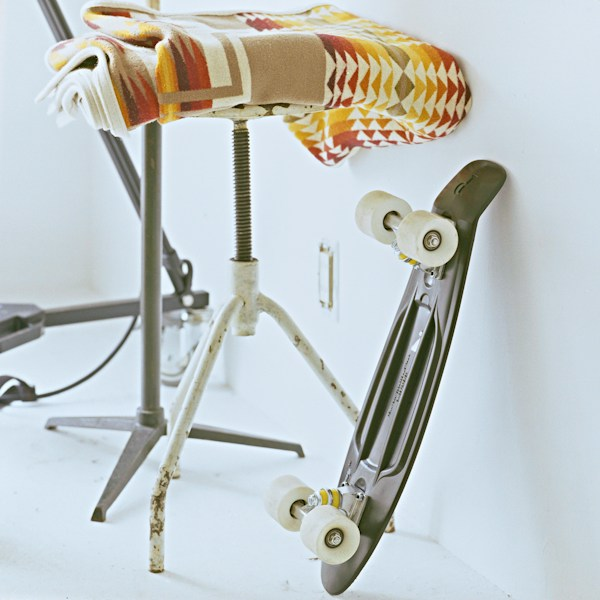
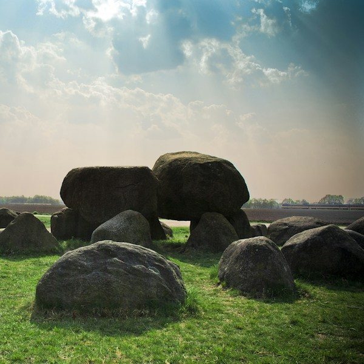
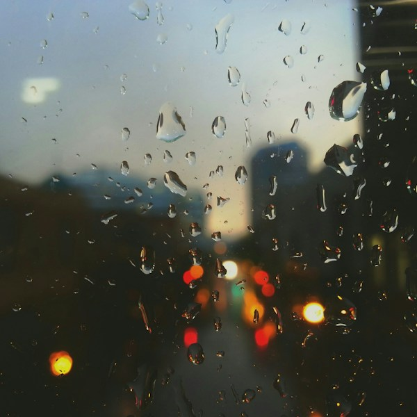
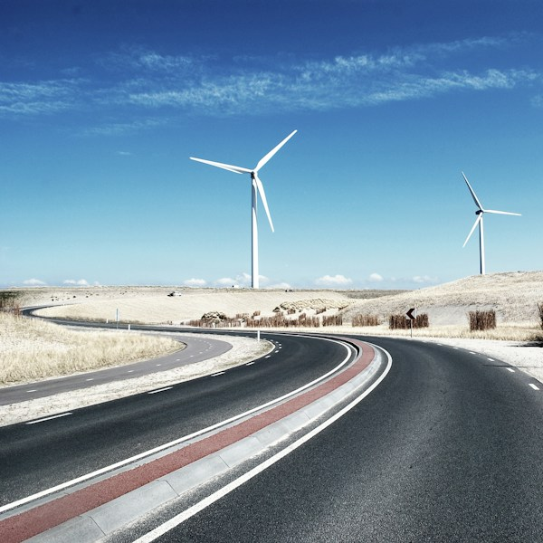
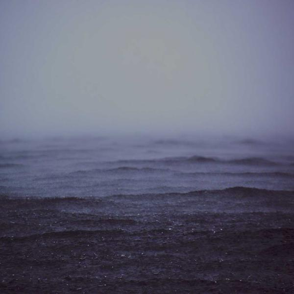
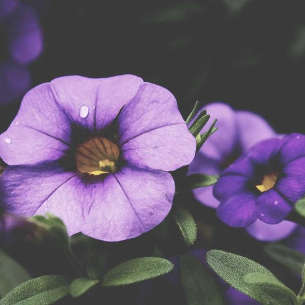
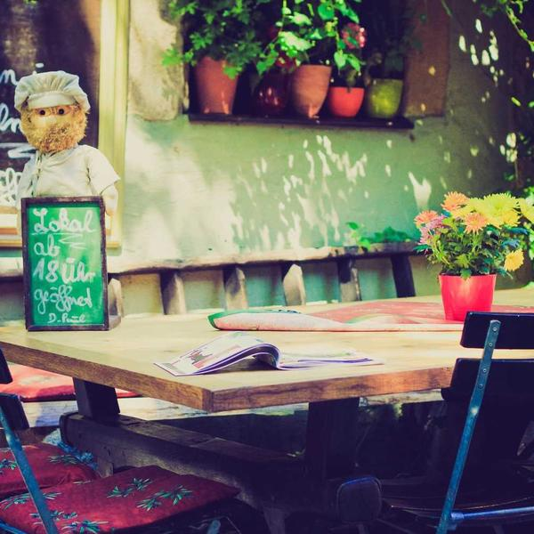
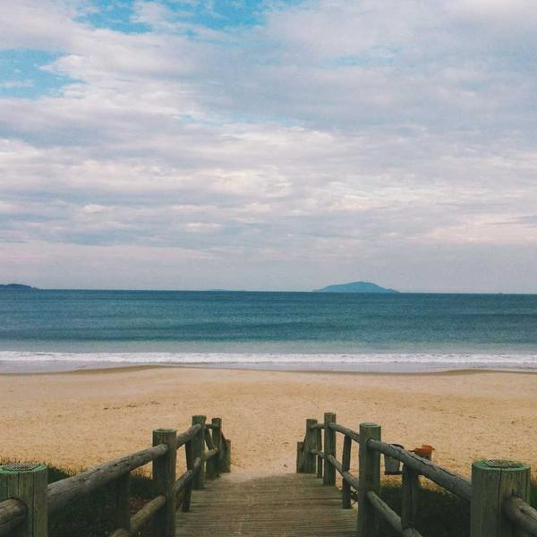
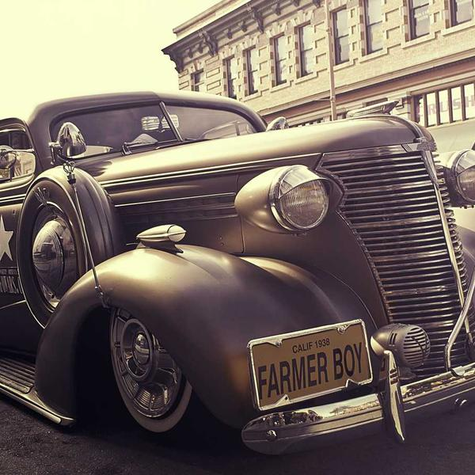

Windows Down
From your playlist · Alternative
4 artists
-
-
-

-

5 shelves · 28 saved items
From your playlist · Alternative
4 artists


From an artist you follow · Electro · Films/Games
1 artist · 3 tracks

4 releases
From an album you saved · Indie Rock
2 artists

4 releases
3 releases
24 Oct

21 Oct

14 Oct
8 Oct
From your playlist · 12 tracks
From an artist you follow · 26 tracks

KestrelVela Moreno
SaltglassVela MorenoFrom an album you saved · 10 tracks
From the songs you liked · 1,461 tracks

Chrome GospelWires & Wolves24 songs · 3 albums
19 songs · 2 albums
12 songs · 1 album
9 songs · 2 albums
7 songs · 1 album
6 songs · 1 album